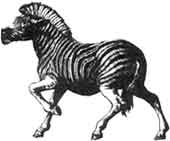
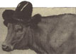
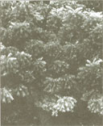

A new haven for
endangered species
Yeah, yeah ...everybody talks about helping endangered species, but it seems like today's plans are nothing but unrealistic pipedreams. How about taking a piece of land and devoting it entirely to the preservation and breeding of endangered species?
Consider it done. And consider it a gift - a $2.7 million gift. The Ohio Power Company and American Electric Power presented 9,154 acres of beautifully reclaimed strip-mine land to "The Wilds," an international, non-profit membership organization which is committed to preserving natural diversity. The Wilds happily accepted the land and converted it into the largest wild-animal complex in North America. Quite a gift.
Apparently, there's quite a guest-list as well: the North American red wolf, who used to be popular until humans moved in and destroyed much of their South Eastern habitat; the African Hartmann Mountain zebra, the rarest species of zebra, is attending as well. Just 25 years ago, 100,000 of these zebras were running around - now there are 6000.
The Asian Wild Horse always makes for interesting conversation, as it is the animal most closely associated with the caveman of Central Europe and Asia (from more than 25,000 years ago). In 1945, there were 31 left in the world. However, a zoological association stepped in and bred the horses, increasing the number to 800. Sadly, the lists of invites to The Wilds continues to grow.
Among the many sponsors of The Wilds is Bonnie Belle, a leading cosmetic and skin-care-products manufacturer. If this company goes ahead with their future campaign plan, you'll be able to see photos of the reservation in upcoming ads. In the meantime, you can find out more information by calling the The Wilds administrative office (614/228-0402) or the reservation itself (614/638-5030).
If you're having trouble getting your cow to produce enough milk, throw a little Garth Brooks or Willie Nelson in your tape player. You'll be dancing with glee, and so will your cow.
At least that's what Bethany Welch says. As USA Today reports, this high-school sophomore from Ashland, Ohio, is one of 750 students from around the world who have entered the 43rd International Science fair in Nashville, Tennessee. Her experiment was to determine how music affected cows' milking over an eight-week time period.
Her results are now in: Not only did music boost the milk output of the 160 cows on her family farm - but the type of music actually determined how much more milk was produced.
It seems that cows were suckers for a good country tune, which increased their milk output by a whopping 6.2%. Apparently, the cows also loved stomping their hooves to good of rock 'n' roll, as milk production with this background music increased by 4.7%. As for classical music, well, it seems that cows could pretty much take or leave Vivaldi or Beethoven, as proven by the small 1.6% increase.
You're probably wondering about your favorite brand of music, whether it be opera, folk music, or show tunes. Why not go ahead and try them all out? (If you're a classical music buff, don't give up so soon - try a little Moozart.) Udder than that, you're on your own, so have a little fun doing your own experiments. If all else fails, remember: if you produce the country tunes, your cow will produce the milk.
Imagine if there was something all-natural that could solve all our problems - something like a tree? Some scientists say the Neem - an Indian tree of tropical species - is the cure-all we're looking for. What does it do? Well, according to the Washington Post's article on the Neem, the real question is - what doesn't it do?
It's a reforestation technique. The Neem tree grows comparatively fast (it hits about 30 feet high in six years!), and thrives best on worn-out crop land. It actually does it's quickest growing on poor soil in the semi-arid lands of Africa and Arabia.
It's a pesticide. The extracts of the Neem's seeds and leaves contain pesticides which attack those pesky insects chowing on your plants. The extracts kill over 200 species of insects, but won't harm birds, mammals, or insects which don't eat plants. However, there are those who consider this pesticide to be cruel and unusual, as it can take up to two weeks to kill the insects.
It's a toothpaste. (It'll clean those nasty little bugs right off your teeth!) Scientists claim that millions of Indian folks only "brush" their teeth with a frayed Neem twig. Soon after, German researchers caught on to this potential marketing product, and after several studies, confirmed that there are indeed substances in the Neem which prevent tooth decay.
It's a contraception. (What?) But it's no joke. There is evidence that the Neem's oil, when pressed from the seed, acts as a strong spermicide. Researchers are now trying to use one of the Neem's compounds to create a male birth control pill.
We know - now you want at least 10 Neem trees to plant in your own backyard. Unfortunately, there are only two Neems in America (both of them alive and doing well in Florida). But don't worry, you'll be hearing more about this "miracle" tree. There's a lot more research going on, and field cultivation is being done in Oklahoma, southern California, and Arizona. And, of course, plenty of skeptics are keeping the Neem discussion alive. So keep your ears and your backyard open.
Get this: According to the Wall Street journal, gardening has become a favorite yuppie time-passer. How very E.C. (environmentally correct).
For one thing, culinary herb sales are growing like crazy. And the more exotic, the better - carrots and lettuce are out; radiccio, Bok choy, and arugula are in. The beauty of yuppie gardening is that it's no-fail - gardeners simply use bedding plants instead of seedlings. Most importantly, it's non-messy! (You really expect board members to enter into their important meetings with soil under their fingernails?)
To further alleviate potential mess, yuppie gardeners have taken to fashionable "gardening apparel." Let's see, there are sporty pants with insertable knee pads, pants with tool-holding pockets, and plastic clogs to keep tender yuppie feet dirt-free.
Leave it to those nutty baby boomers to turn gardening into an expensive, competitive hobby. But don't worry, the trend will surely pass, and yuppies will find a brand new hobby to invest all their money in...
Editor's Note: Do you have any interesting, timely, or even peculiar news items you would like to share with other MOTHER readers? If you do, please send your newspaper clippings, photos, and true tales to "Bits & Pieces," Mother Earth News, P.O. Box 129, Arden, NC 28794. We'd love to hear from you!
|
 |
 |
 |